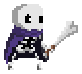

O que é Skul?
A raça humana atacando o castelo do Rei Demônio não é nenhuma novidade e já aconteceu inúmeras vezes antes. O que torna esta vez diferente, porém, é que os Aventureiros decidiram unir forças com o Exército Imperial e o 'Herói de Caerleon' para liderar um ataque total na esperança de acabar com os Demônios de uma vez por todas. Eles atacaram a fortaleza dos Demônios com números esmagadores e tiveram sucesso em sua destruição total. Todos os demônios no castelo foram feitos prisioneiros, exceto por um esqueleto solitário chamado 'Skul'.
Saber mais:
SKULS
Uma das principais mecânicas em Skul: The Hero Slayer é a habilidade do jogador de trocar a caveira padrão por outra, encontrada ao longo do jogo. Cada caveira tem estatísticas e habilidades especiais associadas a ela, e cada uma tem um conjunto de habilidades diferente quando trocada.
- A maioria dos crânios também tem a habilidade de Despertar , transformando-se em uma versão melhor daquele crânio, com suas habilidades aprimoradas.
- Ao passar de Raro para Único, uma segunda habilidade também é obtida no mesmo calibre Único, em oposição à versão Comum daquela habilidade adquirida.
- Abaixo está os despertares de todas as caveiras, com suas respectivas raridades. (Comum, Rara, Unica e Lendária)
Skul, também conhecido como "Little Bone"
Skul
Sem evolução
Skul, também conhecido como "Little Bone", é o personagem principal e único em comparação a qualquer outro crânio. É o crânio padrão de cada tentativa que você faz e não tem como retornar se você substituí-lo por outro crânio e mover para outro mapa. A única maneira de jogar como "Little Bone" novamente é começar uma nova run.